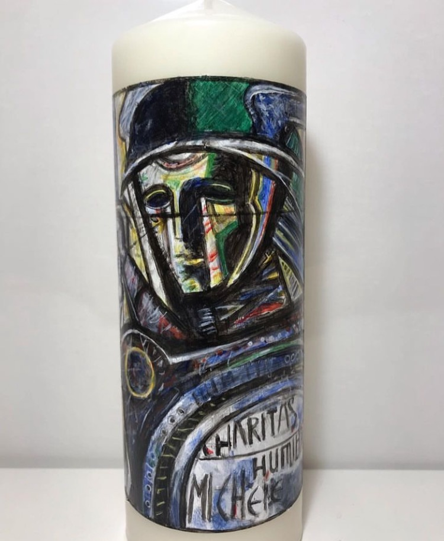
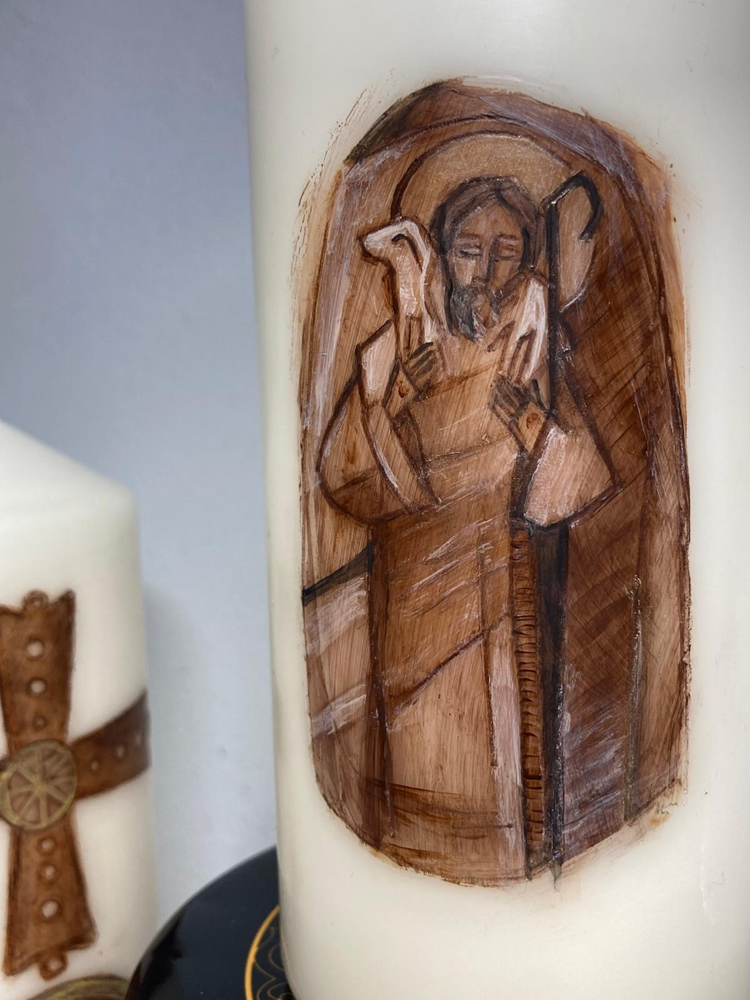
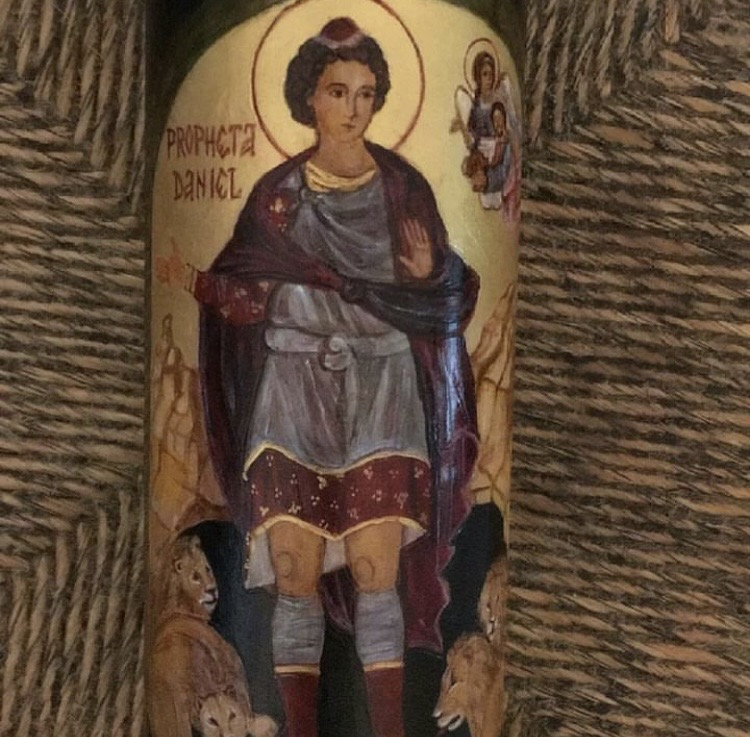
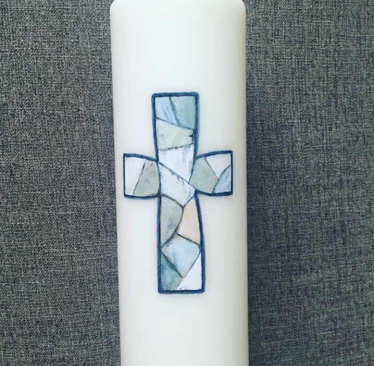
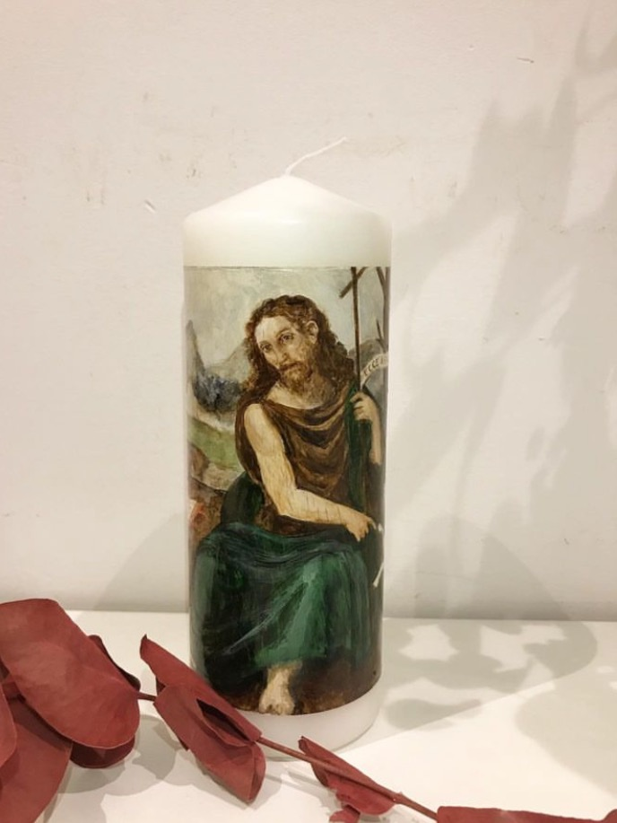
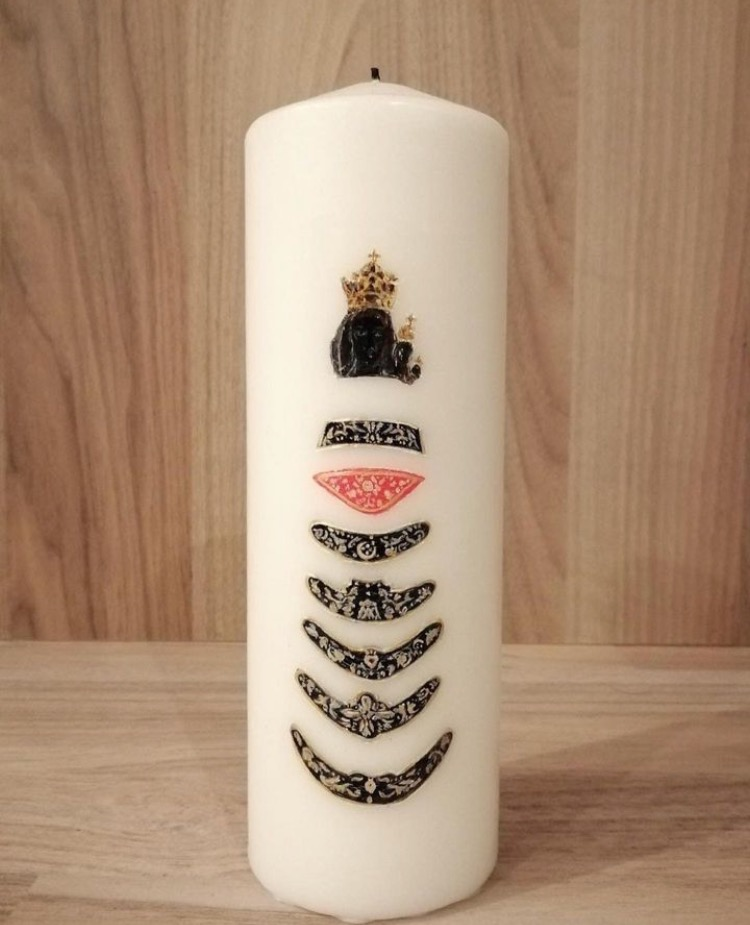
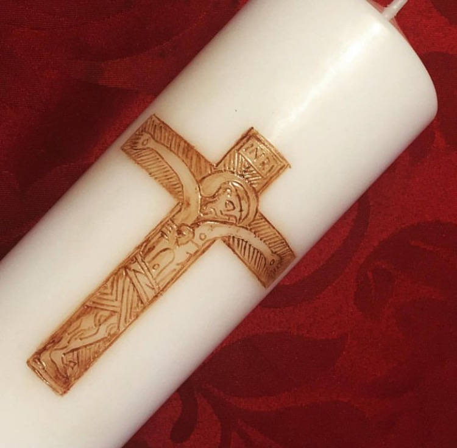

Trabajos realizados
Algunos cirios que ya tienen historia.
Una muestra de creaciones realizadas por Teresa. Cada nuevo cirio se elabora de forma única.
















No hay cirios en esta categoría todavía.